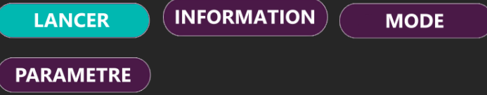

Contexte
Projet réalisé avec un centre hospitalier visant à développer une solution immersive en réalité virtuelle pour la rééducation de patients atteints de troubles neurologiques.
Objectifs
- Créer une expérience VR immersive
- Stimuler le champ de vision du patient
- Concevoir une interface simple et accessible
Mon rôle : UI Designer
J’ai travaillé sur la conception des interfaces utilisateur en tenant compte des contraintes d’accessibilité et du public cible (30–70 ans).
Missions
- Conception UI
- Accessibilité
- Adaptation aux patients
- Collaboration avec UX / VR / Data
Processus
Analyse
UI Design
Prototype
Intégration VR
Tests
Compétences
UI Design
UX VR
Accessibilité
Travail en équipe
Illustrations


Conclusion
Ce projet m’a permis de travailler sur un cas réel dans le domaine médical. J’ai appris à concevoir des interfaces accessibles et adaptées à un public spécifique, tout en prenant en compte les contraintes de la réalité virtuelle.